| Ano | Jogador | Gols |
|---|---|---|
| 1950 |  Ademir de Menezes Ademir de Menezes |
9 |
| 1954 | 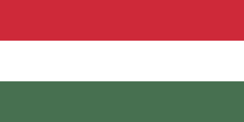Sándor Kocsis | 11 |
| 1958 | 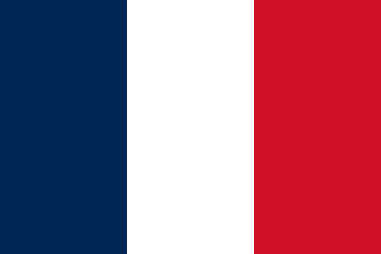Just Fontaine | 13 |
| 1962 | Garrincha |
4 |
| Váva |
||
| 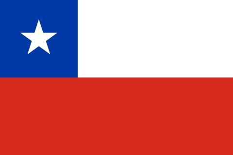Leonel Sánchez | ||
| Flórián Albert | ||
| 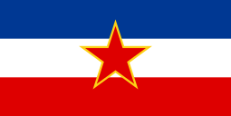Drazan Jerkovic | ||
| 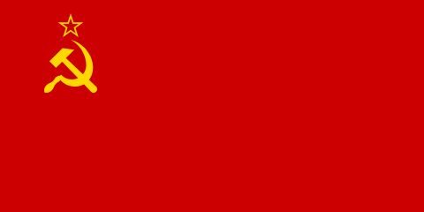Valentin Ivanov | ||
| 1966 | 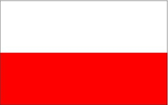Eusébio | 9 |
| 1970 |  Thomas Müller Thomas Müller |
10 |
| 1974 | Grzegorv Lato | 7 |
| 1978 | 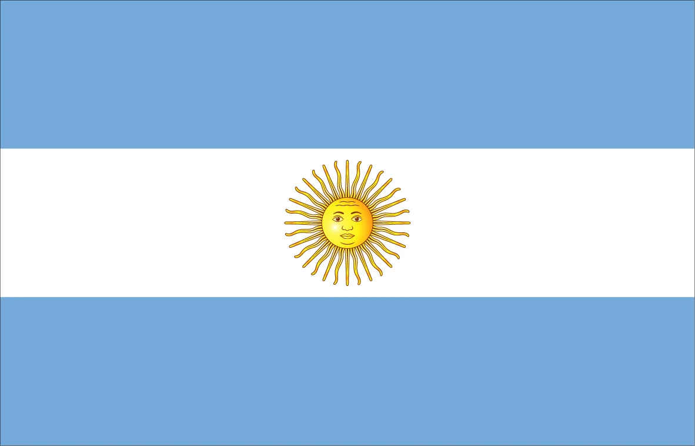Mario Kempes | 6 |
| 1982 | 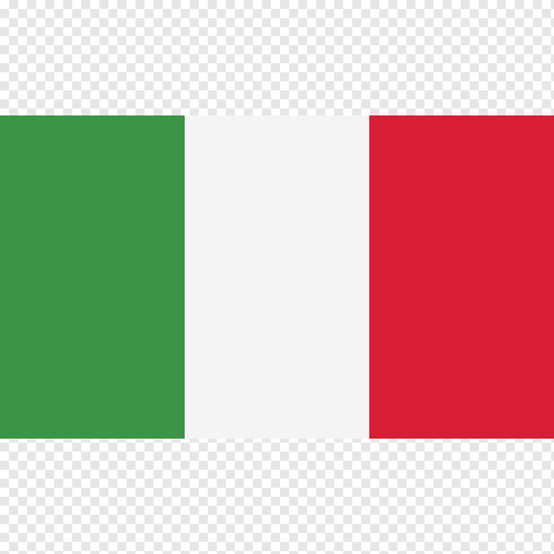Paolo Rossi | 6 |
| 1986 | 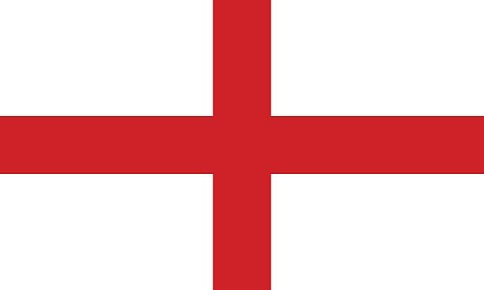Gary Lineker | 6 |
| 1990 | Salvatore Schillaci | 6 |
| 1994 | 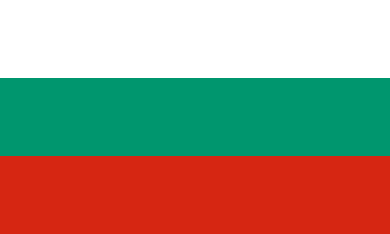Hristo Stoichkov | 6 |
| 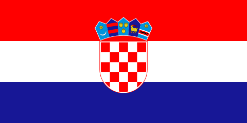Oleg Salenko[nota 1][5] | ||
| 1998 | Davor Suker | 6 |
| 2002 | Ronaldo |
8 |
| 2006 | Miroslav Klose |
5 |
| 2010 | Thomas Müller |
5 |
| 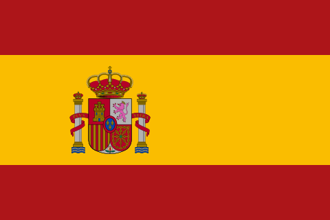David Villa | ||
 Sneijder Sneijder |
||
| 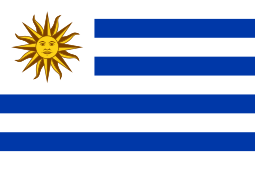Diego Forlán | ||
| 2014 | James Rodríguez | 6 |
| 2018 | Harry Kane | 6 |